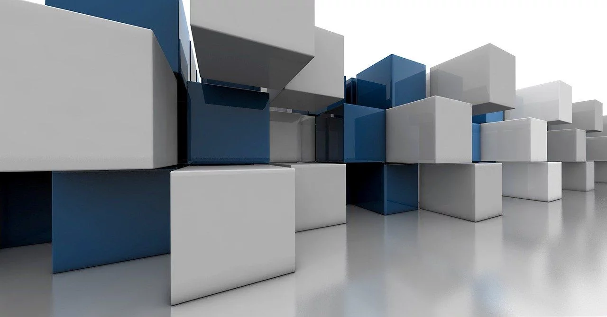

Grafika trójwymiarowa (3D)
Grafika trójwymiarowa (3D) to technika komputerowa umożliwiająca tworzenie i manipulowanie obiektami w trójwymiarowej przestrzeni. W przeciwieństwie do grafiki 2D, która działa na płaskiej powierzchni, grafika 3D wykorzystuje trójwymiarowy układ współrzędnych (X, Y, Z), co pozwala na realistyczne modelowanie obiektów, ich oświetlenie, teksturowanie oraz animację.
Grafika trójwymiarowa składa się z kilku kluczowych elementów:
- 📌 Modelowanie 3D – Tworzenie obiektów za pomocą siatek (mesh), które składają się z wierzchołków (vertices), krawędzi (edges) i ścian (faces).
- 📌 Teksturowanie – Nakładanie obrazów na powierzchnię modelu, aby nadać mu realistyczny wygląd.
- 📌 Renderowanie – Przekształcanie modelu 3D w finalny obraz lub animację poprzez obliczenie oświetlenia, cieni i efektów wizualnych.
- 📌 Oświetlenie – Dodawanie źródeł światła, aby obiekty wyglądały bardziej naturalnie.

Popularne formaty plików 3D: